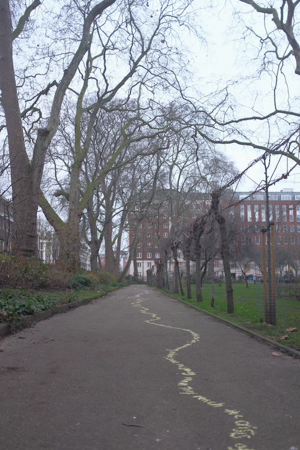
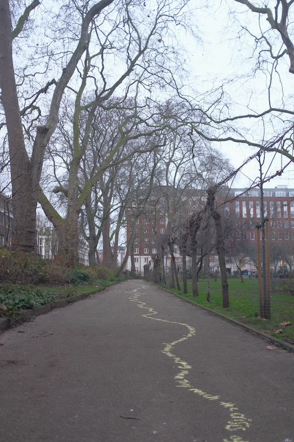

It’s hard to say how Virginia Woolf would have felt about her 137th birthday being commemorated with a
line
of chalk. On 25th January, a passage from her novel The Waves became a literal passage or pathway
threading
around her old haunts in Bloomsbury. Woolf was a revolutionary. She did not look to the past for answers
but
reshuffled history like a deck of cards. Perhaps she would have seen this act of commemoration as too
solid,
too dictated by facts.
But I suppose she would have liked the way that this material that represents childhood is being used to
denote great age. And also perhaps smiled at the way the ephemerality of a line of chalk, washed away
with
the next fall of rain, juxtaposes her relative immortality: the legacy that has outlived her body.
Woolf cannot be forgotten because she pre-empted so many social movements that have emerged well-after
her
death. She is a feminist icon, her essay A Room of One’s Own still often drawn upon to remind us of the
lost
‘wreckages’ of women who failed to be artists due to social pressures. These, Woolf shows us, are the
women
who do not exist now not because they did not exist, but because they were disregarded and forgotten. In
recent years, Wool’s ‘queerness’ has come into the limelight, with a film coming out last year Vita and
Virginia, a fictional biopic of her affair with the aristocratic gardener, Sackville-West. Her novel
Orlando
has shuffled closer to centre-stage of her works, in its celebration of the inherent sameness of all
human
beings under the performativity of gender and the ‘spirit of the age.’


 
